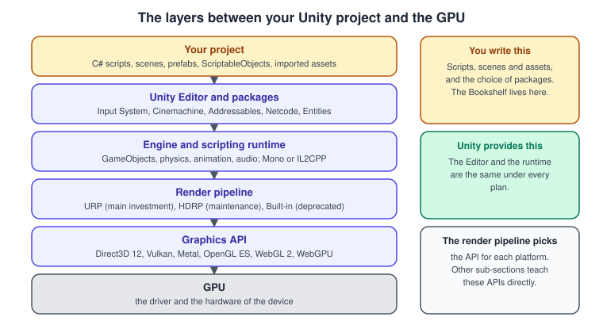
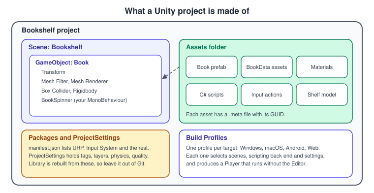
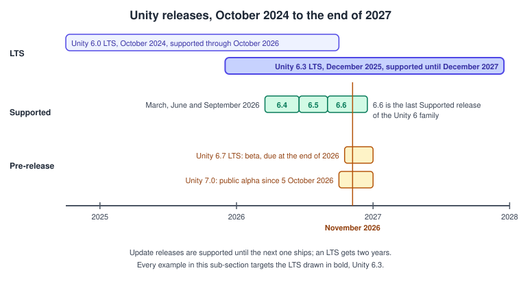
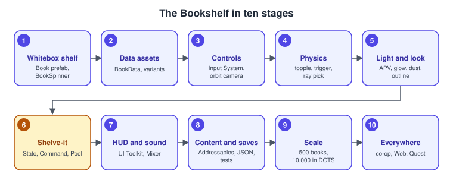

Unity
|
This content was generated with the assistance of AI and should be verified against the official documentation before being relied on in production. |
Unity is a general-purpose game engine with an Editor for building scenes, a C# scripting layer on top of a C++ runtime, a choice of render pipelines and one-click builds for desktop, mobile, consoles, the Web and XR headsets. It is what a team reaches for when the scene, the physics, the animation and the tools matter more than controlling the GPU directly. This sub-section teaches Unity 6.3 LTS with the Universal Render Pipeline (URP) and the Input System package. It covers the Editor, the scripting model, physics, graphics, animation, UI, content, the Data-Oriented Technology Stack (DOTS), multiplayer, platforms, profiling and testing, and it marks what changed in the later releases up to Unity 6.6. It follows one running example, the Bookshelf, from a whitebox shelf to a small game called "Shelve-it", and it says plainly where Unity stands in 2026: a yearly LTS with a stream of Supported releases in between, one render pipeline as the clear investment, a pricing model settled after the Runtime Fee was cancelled, and a runtime moving towards CoreCLR. The pages build on the general pages of Graphics & Games; read those first if the rendering pipeline or the transformation chain are new to you.
What Unity and its neighbours are
| Name | What it is |
|---|---|
Unity Hub |
The launcher that installs Editor versions and their platform modules, and creates and opens projects. |
Unity Editor |
The application where scenes, prefabs and assets are assembled, and where the game runs in Play mode. |
Player |
What a build produces: the game without the Editor, for one platform. |
Packages |
Versioned features added through the Package Manager, such as the Input System, Cinemachine, Addressables or Entities. |
URP, HDRP and Built-in |
The render pipelines. URP is the main investment, HDRP is in maintenance and the Built-in Render Pipeline is deprecated. |
Mono and IL2CPP |
The two scripting back ends. Mono runs compiled C# in a virtual machine; IL2CPP converts it to C++ and compiles it ahead of time. |
DOTS |
The data-oriented stack of Entities, the C# Job System and the Burst compiler, an alternative to GameObjects for large numbers of objects. |
OpenGL, Vulkan, Metal and WebGPU |
The graphics APIs underneath. Unity selects one for each platform; OpenGL, Vulkan, Metal and WebGL teach them directly. |
The difference between a graphics API and an engine is explained in Graphics APIs vs Game Engines, and how to decide between them in Choosing an API or Engine. The C# language itself is in the C# Reference.
Where Unity sits

A Unity project is data plus C#. You write scripts and assemble scenes; Unity runs them on the same engine under every plan. The render pipeline turns the scene into draw calls for the graphics API of the platform, which is why the same project can build for Direct3D 12, Vulkan, Metal or WebGPU. The figure is also a map of this sub-section: the first groups of pages are about the top layers, and the graphics pages reach down to the render pipeline, where Render Graph and Custom Passes is as close to the API as Unity lets you go without a native plug-in.

The vocabulary of the figure is used on every page: a scene holds GameObjects, a GameObject is a list of components, and an asset is a file under Assets with a .meta file that holds its GUID. The tour of the windows and
of the folders on disk is in Getting Started: Hub and Editor.
The release model

Unity publishes two kinds of release. A Long Term Support (LTS) release comes once a year and is supported for two years, with a third year for Enterprise and Industry customers; Unity recommends it for live games and for teams about to lock production. A Supported release, also called an Update release, comes several times a year, has the same quality assurance and weekly patches, and is supported only until the next one ships. Alpha and beta versions are open to anyone through the Hub and are not meant for production.
Unity 6.3 LTS is the version documented here. Unity 6.6 (announced on 1 September 2026) is the final Supported release of the Unity 6 family, Unity 6.7 LTS is in beta and due at the end of the year, and Unity 7.0 has been in public alpha since 5 October 2026, with the move to CoreCLR arriving step by step during its alpha and beta. A new project should use 6.3 LTS unless it needs something only a later release has. Where a page depends on a later release, it says so.
Version baseline
The facts below were checked on 5 November 2026 against the official pages cited in the last column. Items that follow a release can change, so check them again before relying on them.
| Item | Version and status | Source |
|---|---|---|
Documented version |
Unity 6.3 LTS (6000.3), released on 4 December 2025, supported until December 2027. |
|
Previous LTS |
Unity 6.0 LTS (17 October 2024), supported through October 2026. |
|
Latest Supported release |
Unity 6.6 (6000.6), announced on 1 September 2026, the final Supported release of the Unity 6 family. |
|
Next versions |
Unity 6.7 LTS is in beta and due at the end of 2026. Unity 7.0 has been in public alpha since 5 October 2026 and is not for production; its CoreCLR Editor is being built up during the alpha and beta. |
Unity 6.7 manual, Render pipeline strategy for 2026, Unity 7.0 alpha announcement |
Scripting runtime |
Mono and IL2CPP. In 6.6 new projects default to Reload Scene only, with no domain reload on entering Play mode; Unity plans to remove Mono and the domain reload in a future version. |
|
Unity Hub |
3.22.5 (28 October 2026). The Hub bundles a beta of the Unity CLI, and Hub 4.0 is in beta. |
|
Render pipelines |
The Built-in Render Pipeline is deprecated in 6.5, available through the 6.7 LTS lifecycle and supported at least until the end of 2028. URP is the main investment. HDRP is in maintenance, with no new features planned. Render Graph is mandatory in URP since Compatibility Mode was removed in 6.4. |
|
Engine changes |
Dynamic batching deprecated (6.5) and obsolete (6.6). CPU light baker deprecated (6.6), GPU lightmapper the default (6.3). PVRTC removed (6.4). |
|
Web |
The platform is named Web since 6.0. WebGPU left experimental status and is a production graphics API from 6.6. WebAssembly 2023 is the default from 6.5. WebGL 2 remains the default graphics API. |
|
Build |
Build Profiles replaced Build Settings (6.0), with per-profile settings (6.3) and the Build Analysis window (6.6). |
|
Packages for 6.3 LTS |
Input System 1.20, Entities 1.5, Netcode for Entities 1.14, Cinemachine 3.1, Addressables 4.1, Timeline 1.8, XR Interaction Toolkit 3.7, AR Foundation 6.7, OpenXR 1.19, AI Navigation 2.0 and Behavior 1.0. Netcode for GameObjects is on its 2.x line. |
|
Input |
The Input System is installed by default in new Unity 6 projects. The legacy Input Manager is discouraged but not formally deprecated. |
|
UI |
UI Toolkit is recommended, with SVG support, filters and UI Shader Graph in 6.3 and Panel Renderer in 6.5. uGUI remains supported, and TextMeshPro is part of |
|
Pricing |
Personal is free up to US$200,000 of revenue and funding, with an optional splash screen. Pro is US$2,310 per seat per year after a 5 % rise on 12 January 2026. Enterprise is required above US$25 million. The Runtime Fee was cancelled on 12 September 2024. No 2027 prices had been announced. |
|
Official patterns e-book |
Level up your code with design patterns and SOLID (July 2024). |
When to choose what
Choose Unity when a small or medium team needs to ship on many platforms, when the game is 2D, mobile, Web or XR, or when C# and the Asset Store matter. Choose URP for any new Unity project. Choose HDRP only for a project that already depends on it, because it is in maintenance. Choose an existing LTS for a game that is about to lock production, and a Supported release only when you need one of its features and can follow the next one. The general criteria are in Choosing an API or Engine, and what a plan costs is in Licensing and Pricing.
What’s covered
Foundations
| Page | Covers |
|---|---|
Every book correction as a migration table, with the upgrade procedure. |
|
Plans, thresholds, the 2026 price, the splash screen and the Runtime Fee. |
|
The Hub, installing 6.3 LTS, modules, the Editor windows and the Bookshelf project. |
|
Composition, the Transform hierarchy, local and world space, rotations, tags and layers. |
|
Execution order, serialisation, Unity null, coroutines, Awaitable and domain reload. |
|
Prefabs, variants, overrides, instantiation and additive scene loading. |
|
Data assets, event channels and runtime sets. |
|
The patterns of both books with Mermaid class diagrams, SOLID and assembly definitions. |
Input, physics and gameplay
| Page | Covers |
|---|---|
Actions, maps, PlayerInput, polling and callbacks, rebinding and the legacy Input Manager. |
|
Rigidbody, colliders, triggers, raycasts, CharacterController, joints and interpolation. |
|
Rigidbody2D, 2D colliders, effectors and the Box2D v3 low-level API. |
|
Camera, projection, viewports and Cinemachine 3 follow, orbit and blends. |
|
AI Navigation 2.0, the Behavior package and a simple state machine. |
|
JSON, |
Graphics
| Page | Covers |
|---|---|
Built-in, URP and HDRP compared, choosing one and using the converter. |
|
Renderers, Forward+, Deferred, the GPU Resident Drawer, STP and quality tiers. |
|
|
|
The Lit material, texture import and compression, lights, baking, APV and colour space. |
|
Graph anatomy, sub-graphs, custom functions and an HLSL shader in URP. |
|
The Particle System against VFX Graph, and GPU events. |
|
Volumes, physical light units and when HDRP still fits. |
|
Sprites, atlases, tilemaps, 2D lights, sorting and the 2D Renderer. |
Animation, audio and UI
| Page | Covers |
|---|---|
Clips, the Animator Controller, blend trees, layers, humanoid rigs and root motion. |
|
Tracks, signals and the Cinemachine track. |
|
Sources, the listener, spatial blend, the Mixer, snapshots and a music crossfade. |
|
UXML, USS, UI Builder, data binding, Panel Renderer, world-space UI and filters. |
|
Canvas modes, anchors, layout groups, EventSystem and safe areas. |
Content, DOTS, multiplayer, platforms and quality
| Page | Covers |
|---|---|
The import pipeline, Addressables, remote catalogs, Content Directory and AssetBundles. |
|
Data-oriented design, entities, baking, subscenes, |
|
The Multiplayer Center, Netcode for GameObjects, topologies and Netcode for Entities. |
|
Build Profiles, player settings, IL2CPP, platform defines, compression and signing. |
|
The Web platform, WebGPU against WebGL 2, Wasm 2023, Wasm64, jslib and hosting. |
|
XR Plug-in Management, OpenXR, XRI, AR Foundation, Android XR and Quest. |
|
Profiler, Frame Debugger, Memory Profiler, Project Auditor, allocations and batching. |
|
The Test Framework, Edit and Play mode tests, Performance Testing and batch-mode CI. |
|
Custom inspectors, EditorWindow, gizmos and packaging tools. |
|
Package Manager, scoped registries and Asset Store licensing. |
|
Unity AI tools, Sentis, Inference Engine and ML-Agents. |
|
The one-page A4 summary and the PDF to download. |
Coverage map
Official documentation areas
| Area | Official documentation | Pages |
|---|---|---|
Install and Editor |
Unity Hub release notes, the Manual on the Hub and the Editor interface, and the Unity Essentials pathway: Hub, versions, modules, Editor windows, the new Hierarchy window and overlays |
|
GameObjects |
Manual on GameObjects and prefabs: GameObject, Transform, components, tags, layers, prefabs, variants and overrides |
|
Scripting |
Execution order, the MonoBehaviour and ScriptableObject API: lifecycle, serialisation, coroutines, Awaitable, Enter Play Mode and domain reload |
C# Scripting and the MonoBehaviour Lifecycle, ScriptableObjects and Data-Driven Design |
Scenes and physics |
Scenes, SceneManager, PhysX and 2D physics with the Box2D v3 low-level API: additive loading, |
|
Input and UI |
|
|
Rendering |
URP manual and Render Graph, HDRP overview and the Render Pipeline Converter: Forward+, APV, GPU Resident Drawer, STP and custom passes |
Render Pipelines Overview, URP in Depth, Render Graph and Custom Passes, HDRP Overview |
Shaders and VFX |
Shader Graph, VFX Graph and the Particle System: node graphs, HLSL in URP, GPU and CPU particles |
|
Animation and audio |
Mecanim, Timeline, Cinemachine 3.1 and Audio: state machines, blend trees, retargeting, Animation Rigging, cameras and mixers |
Animation and Mecanim, Timeline and Cutscenes, Cameras and Cinemachine, Audio |
Content |
Addressables 4.1, Content Directory (6.6) and AssetBundles: import pipeline, remote catalogs and async loading |
|
DOTS |
Entities 1.5, Burst, Jobs, Mathematics, Entities Graphics and Unity Physics: ECS, baking, subscenes, |
|
Multiplayer |
Multiplayer Center, Netcode for GameObjects 2.x, Netcode for Entities 1.14 and Multiplayer Services: NetworkObject, RPCs, NetworkVariables, client-server and distributed authority |
|
Builds and platforms |
Build Profiles and the Web, Android and iOS manuals: player settings, IL2CPP and Mono, platform defines, WebGPU, jslib interop and texture compression |
|
XR |
OpenXR 1.19, XRI 3.7 and AR Foundation 6.7: XR Plug-in Management, XR Origin, Android XR and Meta Quest |
|
Profiling and testing |
Profiler, Memory Profiler, Frame Debugger, Project Auditor, Render Graph Viewer, Test Framework and Performance Testing: CPU, GPU, memory, markers, Edit and Play mode tests and batch-mode CI |
|
Learning |
Unity Learn and the Unity e-books on patterns, ScriptableObjects and URP: pathways and patterns |
Project Architecture and Design Patterns, ScriptableObjects and Data-Driven Design |
Concepts from the books
The two books are UIA (Joseph Hocking, Unity in Action) and GDP (David Baron, Game Development Patterns with Unity 2021). Each cell lists the chapters that contribute the concept, and the last column the pages that cover it. The books are consulted references: no text, figure or code is copied from them, and where a book and the official documentation disagree the documentation is followed. Both are listed in the section bibliography.
| Concept | UIA | GDP | Pages |
|---|---|---|---|
Editor, components |
1 |
3 |
Getting Started: Hub and Editor, GameObjects, Components and Transforms |
Transforms and 3D space |
2 and 8 |
— |
|
MonoBehaviour lifecycle, coroutines |
1, 3 and 10 |
3 |
|
Input |
2, 6 and 8 |
5 and 7 |
|
Raycasts, 3D physics, CharacterController |
2, 3 and 9 |
— |
|
2D sprites and physics |
5 and 6 |
— |
|
Prefabs and scenes |
3, 5 and 12 |
— |
|
Textures, models, skybox, lighting |
4, 8 and 10 |
— |
|
Particles |
4 |
— |
|
Mecanim |
6 and 8 |
5 |
|
uGUI and TextMeshPro, IMGUI |
5, 7 and 12 |
4 to 7 |
|
Events, Observer, Event Bus |
7 |
6 and 9 |
|
Singleton, managers, Service Locator |
9 |
4 and 16 |
|
State, Command, Strategy, Decorator, Visitor, Facade, Adapter |
3 |
5, 7, 10 to 12, 14 and 15 |
|
Object Pool |
— |
8 |
Project Architecture and Design Patterns, Profiling and Optimization |
Spatial partition, level editor |
— |
13 |
Project Architecture and Design Patterns, Editor Scripting and Tooling |
ScriptableObjects |
— |
3 |
|
Web requests, save and load |
10 and 12 |
— |
|
Audio |
11 |
— |
|
Builds, Web, mobile, XR |
13 |
— |
Build Profiles and Platforms, Web and WebGPU, XR Development |
Cameras |
2, 6 and 8 |
— |
|
Game design document |
— |
2 |
The Bookshelf design summary on this page |
Official concepts missing from the books
Neither book covers the systems that Unity has made its recommended path since they were written. They are covered from the official documentation.
| Concept | Pages |
|---|---|
URP, HDRP and Render Graph |
Render Pipelines Overview, URP in Depth, HDRP Overview, Render Graph and Custom Passes |
Shader Graph |
|
VFX Graph |
|
UI Toolkit |
|
The Input System |
|
Addressables and Content Directory |
|
DOTS |
|
Netcode |
|
Timeline |
|
AI Navigation |
|
Build Profiles |
|
WebGPU |
|
The Test Framework |
|
Profiling tools |
|
Editor scripting |
|
Unity 6 pricing |
Reading path
-
Read Licensing and Pricing, then install Unity with Getting Started: Hub and Editor.
-
Learn the object model: GameObjects, Components and Transforms and C# Scripting and the MonoBehaviour Lifecycle.
-
Build reusable content: Prefabs and Scenes and ScriptableObjects and Data-Driven Design.
-
Make it interactive: Input System, 3D Physics, Cameras and Cinemachine and Navigation and AI.
-
Make it look right: Render Pipelines Overview, URP in Depth, Materials, Textures and Lighting, Shader Graph and HLSL and Particles and VFX Graph.
-
Bring it to life: Animation and Mecanim, Timeline and Cutscenes, Audio and UI Toolkit.
-
Structure the game: Project Architecture and Design Patterns.
-
Keep it healthy: Assets, Addressables and Content, Saving, Loading and HTTP Networking, Testing and CI and Profiling and Optimization.
-
Reach further: DOTS: ECS, Jobs and Burst, Multiplayer and Netcode, Build Profiles and Platforms, Web and WebGPU and XR Development.
If you learned Unity from a book or tutorial written before Unity 6, start with What Has Changed Since the Older Unity Guides. Keep the Unity Cheat Sheet at hand throughout.
Running example
The Bookshelf runs on Unity 6.3 LTS with the URP 3D template and the Input System. It imports the shared bookshelf.glb model used by every sub-section of Graphics & Games, so that the same shelf can be compared across APIs and engines.

-
a whitebox shelf and a
Bookprefab rotated by aBookSpinnerscript (Getting Started: Hub and Editor and Prefabs and Scenes) -
BookDataassets that drive prefab variants (ScriptableObjects and Data-Driven Design) -
Input System actions to select, rotate and pull out a book, with an orbit camera (Input System and Cameras and Cinemachine)
-
toppling books, a trigger "return slot" and raycast picking (3D Physics)
-
a baked shelf, a real-time desk lamp, Adaptive Probe Volumes, a hover glow, dust, a sparkle and an outline pass (Materials, Textures and Lighting, Shader Graph and HLSL, Particles and VFX Graph and Render Graph and Custom Passes)
-
the game "Shelve-it", with State for the game flow, Command for undo and replay, Object Pool for the books and event channels for the HUD (Project Architecture and Design Patterns)
-
a UI Toolkit HUD and menu and a crossfading audio Mixer (UI Toolkit and Audio)
-
Addressables cover art, JSON saves and tests (Assets, Addressables and Content, Saving, Loading and HTTP Networking and Testing and CI)
-
a profiling scene with 500 books and a DOTS version with 10,000 (Profiling and Optimization and DOTS: ECS, Jobs and Burst)
-
a co-op version and builds for the Web and for Quest (Multiplayer and Netcode, Web and WebGPU and XR Development)
The Bookshelf design summary
A game design document records what a game is before anyone builds it. For a project of this size one table is enough, and it is the starting point of every later decision.
| Topic | Decision |
|---|---|
Concept |
"Shelve-it": books fall towards a shelf, and the player catches them and returns each one to its slot. |
Player and controls |
A librarian moves along the shelf with Move, takes a book with Grab and pauses with Pause, on keyboard, gamepad and touch. |
Rules |
A shelved book scores 10 points, with a bonus for every third book in a row, and a book that hits the floor costs 5 points. Shelving can be undone. |
Game flow |
A menu, then a round that is playing, paused or over, handled by a state machine. |
Look and sound |
The shared shelf model, a warm reading-room lighting set-up and music that crossfades through an audio Mixer. |
Target |
Desktop first, then the Web and a Quest headset. A session lasts a few minutes. |
Out of scope |
Accounts, in-app purchases and a level editor. |
Related material on this site
-
Graphics & Games for the section overview, the shared Bookshelf assets and the bibliography of every book and official source used.
-
Unity Cheat Sheet for a one-page printable summary.
-
C# Reference for the language of the pages.
-
Unreal Engine for the other engine of this section, with Epic’s Unreal Engine for Unity Developers as a bridge.
-
Multiplayer Game Architecture for the networking theory behind Multiplayer and Netcode.
-
visionOS and Graphics: Canvas, OpenGL ES and GLTextureView for the platform context of the build pages.
-
Entity Component System, The Rendering Pipeline and The Game Loop and Frame Timing for the engine-neutral background.
Bibliography
Books
The Unity pages draw on two books. The books are consulted references for concept coverage: no text, figure or code is copied from them, and where a book and the official documentation disagree the documentation is followed. The complete entries, with every other source of the section, are in the section bibliography.
-
Joseph Hocking, Unity in Action: Multiplatform game development in C#, 3rd edition, Manning, 2022, ISBN 978-1-61729-933-9, written for Unity 2020.3 LTS: Manning.
-
David Baron, Game Development Patterns with Unity 2021, 2nd edition, Packt, 2021, ISBN 978-1-80020-081-4, written for Unity 2021.1 and later: O’Reilly listing.
References
-
Unity Manual: https://docs.unity.com/en-us/engine/6000.3/manual/ and Scripting API: https://docs.unity.com/en-us/engine/current/script-reference/
-
Unity 6 support: https://unity.com/releases/unity-6/support and release overview: https://unity.com/releases/release-overview
-
What’s new in Unity 6.6: https://docs.unity.com/en-us/engine/6000.6/manual/whats-new/unity66
-
Render pipeline strategy for 2026: https://unity.com/topics/render-pipelines-strategy-for-2026
-
Released packages for 6.3: https://docs.unity.com/en-us/engine/6000.3/manual/packages-list/packages-all/pack-safe
-
Pricing updates: https://unity.com/products/pricing-updates
-
Unity Hub release notes: https://unity.com/unity-hub/release-notes
-
Unity Learn: https://learn.unity.com
-
The books and the other sources of the section bibliography